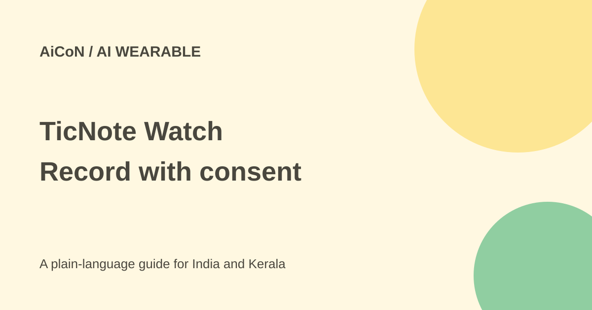

TicNote Watch: recording, cloud AI and India checks
TicNote Watch can record conversations from your wrist. Recording without a phone is different from keeping transcription offline: the vendor FAQ describes cloud processing for AI services.

What does TicNote Watch do?
Mobvoi's September launch describes a watch that records, transcribes and summarises conversations alongside sleep, heart-rate and workout tracking. It says a long press starts recording in two seconds, with two microphones and noise reduction for voices three to five metres away.
The vendor claims more than 24 hours of continuous recording and storage for up to 200 hours. Those are stated recording figures, not a guarantee of general smartwatch battery life. Room noise, speaker distance and your use can affect the result. This guide did not test the hardware.
Offline recording is not offline AI
The launch says recording can work without a phone, including offline and two-way call recording. Its general TicNote FAQ separately says recordings can be stored both on hardware and in private account cloud space. AI services such as transcription upload data to a cloud service provider.
Do not describe this as a fully offline assistant or assume an offline recording never leaves the watch later. Read the current app controls before enabling sync or processing. The privacy policy says data collected through Google Cloud is, in principle, stored in the United States.
Languages, summaries and journals
Mobvoi claims live wrist transcription in 17 languages, at least 98% accuracy and latency below 1.5 seconds. These are vendor figures. The FAQ distinguishes 17 live-transcription languages from post-meeting translation in more than 120 languages and other international app language support.
Malayalam appearing in a wider app-language list does not establish Malayalam live transcription on this watch. Confirm the exact function and language before purchase. For mixed Malayalam-English meetings, try a short sample rather than relying on a general accuracy figure.
The release also describes highlights, summaries, mind maps, a searchable AI Journal and a daily recap combining conversations and wellness signals. It mentions Notion and Obsidian export. Check the exported text against the recording; a neat summary can still get a name, amount or decision wrong.
Price and free-plan limits
The current product page lists US$199, approximately ₹19,190 at the sourced reference of ₹96.43 per dollar. The launch lists a US$249 regular price, about ₹24,011, and calls US$199 a limited introductory offer. No verified expiry is given here.
The launch includes Plus with 600 transcription minutes monthly, with optional Pro and Business for heavier use. The general FAQ discusses shared account quotas and device-linked allowances. Check what your Watch account actually includes and the current upgrade terms; do not assume multiple devices each get an independent quota.
This is paid hardware, not a free smartwatch. These rupee estimates exclude shipping, tax, customs and conversion charges. India delivery, local warranty and the final landed price were not verified. An India listing for the separate TicNote recorder is not proof of Watch availability.
How to use it carefully
- Confirm the exact Watch model, delivery destination, warranty, return rules and total cost.
- Read app privacy and cloud-sync settings before adding sensitive recordings.
- Tell everyone when recording and get the permission your setting requires. Check workplace and call-recording rules.
- Start with a short, non-sensitive sample in your intended language.
- Review names, numbers and decisions in the transcript against the audio.
- Check the export and delete unwanted audio and cloud copies through the available controls.
What changed since the original post?
The archive post stressed offline recording. This guide adds the cloud-AI distinction, current price and account-quota checks. It keeps battery, accuracy and range as vendor claims, and does not equate broad translation support with Malayalam wrist transcription.
Frequently asked questions
Is transcription fully offline?
Not established. The FAQ describes cloud uploads for AI transcription.
Is it free?
No. Hardware is paid; the included monthly allowance has limits.
Was recording tested?
No. This is a public-source check, not a hands-on review.
Sources: Watch product · Mobvoi launch · FAQ · Privacy policy · INR reference. Checked 7 October 2026.